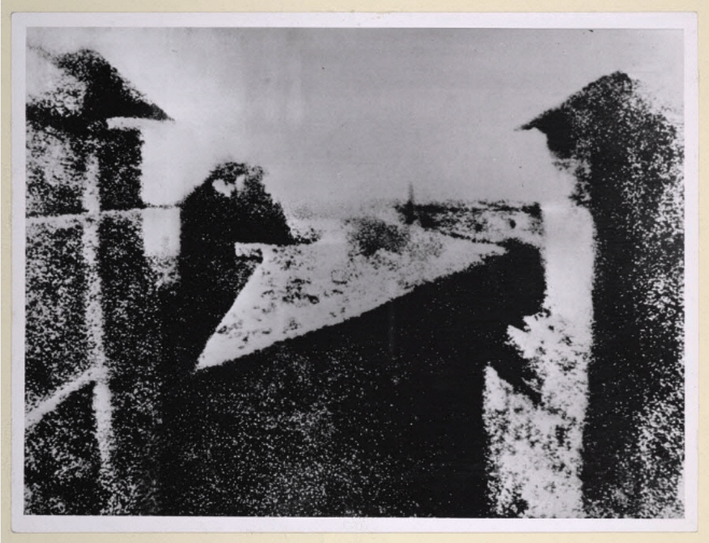

Historique de la photographie numérique
La photographie existe depuis le XIXe siècle, mais c'est dans les années 1970
que la version numérique a commencé à apparaître.
Aujourd'hui, presque toutes les photos sont prises avec des appareils numériques
ou des smartphones.
Source : pixees.fr

Les grandes étapes de l'histoire
- 1826 — Première photo de l'histoire par Nicéphore Niépce
- 1839 — Invention du daguerréotype par Louis Daguerre
- 1888 — Kodak lance le premier appareil photo grand public
- 1969 — Invention du capteur CCD par Bell Labs
- 1975 — Premier appareil photo numérique créé par Kodak
- 1990 — Apparition de Photoshop et du traitement d'image
- 2000 — Les smartphones intègrent des appareils photo
- Aujourd'hui — Plus de 1400 milliards de photos par an
Les inventeurs clés
- Nicéphore Niépce — première photographie
- Louis Daguerre — le daguerréotype
- George Eastman — fondateur de Kodak
- Steven Sasson — premier appareil numérique (Kodak, 1975)
- Thomas Boyle — co-inventeur du capteur CCD
Comparaison photo argentique vs numérique
| Caractéristique | Photo argentique | Photo numérique |
|---|---|---|
| Support | Pellicule chimique | Capteur électronique |
| Stockage | Négatif physique | Carte mémoire / Cloud |
| Développement | Laboratoire photo | Immédiat sur écran |
| Coût par photo | Élevé | Quasi nul |
| Retouche | Difficile | Facile avec logiciel |
Le premier appareil photo numérique créé par Kodak en 1975 pesait 3,6 kg et prenait 23 secondes pour enregistrer une seule photo en noir et blanc avec une résolution de 0,01 mégapixel !
Vidéo sur l'historique
Voici une vidéo pour mieux comprendre l'histoire de la photographie :
Pour aller plus loin
Pour en savoir plus sur l'histoire de la photographie : Wikipedia — Histoire de la photographie
⬆ Retour en haut